MissingClassInCS
计算机教育中缺失的一课 · the missing semester of your cs education (missing-semester-cn.github.io)
Missing Class in Computer Science
shell的简单使用
我们现在就可以开始使用shell了，我们可以创建简单的变量
$ foo=bar
$ echo foo
bar 值得注意的是空格在这里就会显得关键，我们如果一不小心多打了空格，就会发现shell爆错误了：
我们可以使用$符号表示对变量名的解析。
$ echo "We can get the value of the foo that foo is $foo"
We can get the value of the foo that foo is bar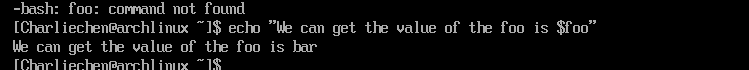
当然，我们的重点是去写简单的shell脚本
vim makeDir.sh
makeDir(){
mkdir -p "$1"
cd "$1"
} 现在，我们保存这个脚本，，然后
source makeDir.sh 现在，我们可以尝试一下，只打出make，一般而言会自动补全为makeDir
~$ makeDir test
~/test $tips:我们执行指令如果发现权限不够，可以用sudo，然后sudo !!，!!将会自动的替换成上一条指令，在我的Arch下它会提示将要执行的指令
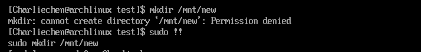
shell里有一些含义特殊的参数，我来举个例子：
echo $?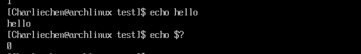
可以看到我们执行这个的时候没有报错而是返回了0，0在计算机世界里可以认为是没有错误的意思。shell里有什么特殊的参数呢：
特殊参数的简介
$n
语法：
$n,含义：用于接收shell脚本文件执行时传入的参数。$0
#用于获取当前脚本文件名称$1~$9
#代表输入的第一个参数到第9个参数 # 这都不用括号（要也不影响）第10个以上就用数 字 比 如 {数字} 比如数字比如{12} # 后面这些都必须要{ }括号
简单示例编辑一个名为456.sh的shell脚本：
#!/bin/bash
echo $0
echo "输入的第一个参数：$1"
echo "输入的第二个参数：$2"
echo "输入的第11个参数：${11}"执行：bash 456.sh 11 22 33 44 55 66 77 88 99 1010 1111，获取的结果如下：
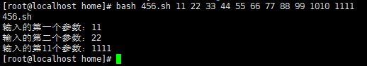
$#
语法：
$#,含义：获取shell脚本所有输入参数的个数(输入2个就是2个)。Tips:
- 强烈注意：在这里面，使用单引号，里面的内容会原样输出，里面加的任何变量，无论带括号不，都是原样输出；
- 建议，使用双引号里面变量就加上{}，没有引号就不要这{}，（引号与{}有无在这里都没有影响）
$* 和 $@
- 语法：
$*、$@,含义：都是获取所有传入参数，用于后续输出所有参数。
区别：
直接原样，不用双引号括起来，那两者一样，都是原样
echo '直接输出$*:'$* # var1 var2 ... varn echo '直接输出$@:'$@ # var1 var2 ... varn # 两者是一样的使用双引号括起来(不能是单引号，参上的Tips)：那么
"$*"跟上一样的，就是将这些拼接起来的字符串；而"$@"则是一个数组，是可以一个个取的，用循环验证。
简单示例(编辑一个名为456.sh的shell脚本)：
#!/bin/bash
for item in "$*" # 结果就是全部打印出来
do
echo $item
done
echo "************************"
# 这也是shell中的循环写法
for item in "$@"
do
echo $item # 这里也可以${item}，但记得上面Tips
done 执行：bash 456.sh 11 nihao 123 hello abc 456,结果如下：
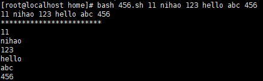
$?
$?,含义：用于获取上一个shell命令的退出状态码，或者是函数的返回值echo "hello" echo $? # 上一条肯定执行成功，这就会得到0得到0就代表执行成功，非0就是不成功
$$
-
### End 我们shell同样也有true和false  也就是说，当条件为真的时候，我们查看状态就是0，反之  我们也可以使用逻辑运算符：  注意到执行的逻辑是短路的，在||中，只要执行的第n-1个表达式是真的，她就不会去执行第n个表达式！对于&&，则是只要执行的第n-1个表达式是假的，她就不会去执行第n个表达式！ 变量之间的值传递可以使用`$(value)`的方式  我们也可以嵌入到字符串里去：  当然，除了变量，流程之间也可以使用替换。cat <(ls) <(ls ..)
他将会把上一个的输出作为输入给前一级的文件句柄。这样的话我们实际上就是在串联的处理文件 ### 简单的脚本实例 ```shell # will display date echo "Starting Program at $(date)" # this sentence will display the scripts name and the arguments it has, and the process id the progress running the current scripts echo "Running program $0 with $# arguments with pid $$" for file in "$@"; do # View the usage of /dev/null in the following # in this sentence, we redirect the STDOUT as well as the STDERR to the null # So we won't see any output on the screen related to the command grep foobar "$file" > /dev/null 2> /dev/null # this if will check the command : grep foobar "$file" to see if there have the foobar, if not the result of $? will not be ZERO! then we consider there are no foobar! then goto the if - fi blocks! if [["$?" -ne 0]];then echo "File $file does not have any foobar, add one currently!" echo "# foobar" >> "$file" fi done
我们来尝试跑一下脚本：
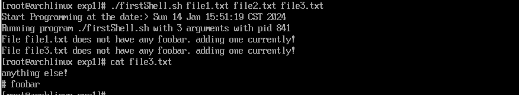
下面有一些补充：
/dev/null 的作用
在 Linux 系统中，/dev/null 是一个特殊的文件，用于将数据彻底丢弃。它是一个特殊的文件设备，可以通过标准输入和标准输出访问。读取 /dev/null 将会立即返回 EOF（文件结束符），而向它写入任何数据将会直接被忽略掉，从而丢弃数据。
因为 /dev/null 丢弃所有数据，所以它通常用于一些需要忽略输出或者输入的场合。例如，如果你正在运行一个命令，但是你不想看到输出，你可以将输出重定向到 /dev/null。类似的，如果你需要一个空的输入流来执行一个命令，你可以将输入重定向到 /dev/null。
如何使用 /dev/null
- 重定向输出
使用 /dev/null 可以轻松地禁止输出，将输出重定向到 /dev/null 即可。例如，以下命令将不会在屏幕上打印任何输出：
$ ls /not/a/real/path > /dev/null在这个例子中，输出被重定向到 /dev/null，因此不会在屏幕上打印任何输出。
- 禁止输出和错误
如果你希望同时禁止输出和错误输出，你可以将标准输出和标准错误输出都重定向到 /dev/null。例如，以下命令将不会输出任何内容，即使命令本身存在错误：
$ ls /not/a/real/path > /dev/null 2>&1在这个例子中，标准输出和标准错误输出都被重定向到 /dev/null。因此，即使命令本身存在错误，也不会在屏幕上显示任何输出。
- 禁止输入
类似地，你也可以使用 /dev/null 来禁止输入。例如，以下命令将不会等待任何输入，而是立即退出：
$ cat < /dev/null在这个例子中，/dev/null 被用作输入流，因此该命令不会等待任何输入，而是立即退出。
{}的使用
我们可以用它来区分共同和不同的输入部分，举个例子：
touch foo{,1,2,3,4,5,6,7,8} 这会创建：
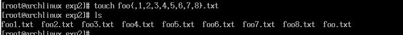
可以看到方便性所在
我们还可以扩展，以一种笛卡拉尔坐标系正交的方式：
touch project{1, 2}/src/file{1, 2}.txt 前提是已经创建了project{1, 2}/src/，当然我们就会发现所有的src下面都会有file1和file2两个txt文件了
find指令
我们可以使用find指令查找东西
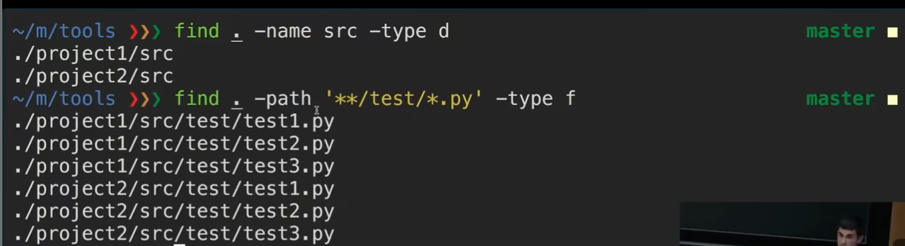
vim
vim是Linux环境下编程的重要工具，我们需要学习vim来提升我们的工作速度。
vim有很多工作模式：操作模式，命令模式等
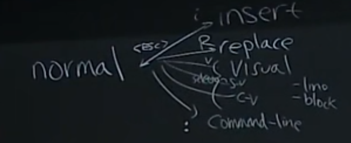
启动vim很简单，只需要
vim 就结束了：
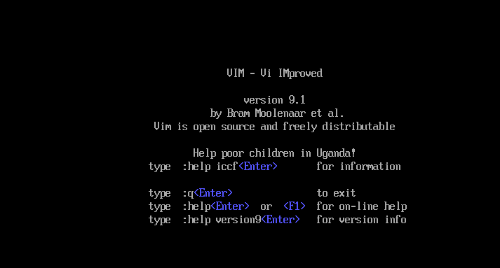
编辑对应的文件只需要：
vim target 我们进入vim的时候默认是使用的普通模式，也就是说，没有办法直接进行输入。尝试摁下什么东西是没有反应的。
如上文所说，想要向文本插入东西，只需要摁下i键，你就会发现：
左下角多出来一个Insert提示符表示的是现在在插入模式了。我们也可以看这里看我们现在处于何种模式
编辑结束，摁ESC键退出插入模式，，退出vim则是:q注意到，退出去是要在命令行模式下的，这就是为什么是:q而不是其他什么东西。
查看帮助是:help
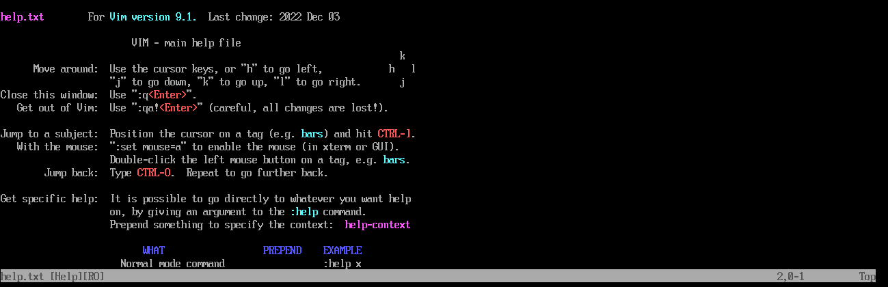
查阅特定行为的help
:help whatBehaviortips:事实上，我们在正常模式也可以编辑，可以尝试把光标聚集在一个字符上后打x键，看看会发生什么
会删除当前的字符
vim支持多窗口的编辑：
:sp(Means splits actually)
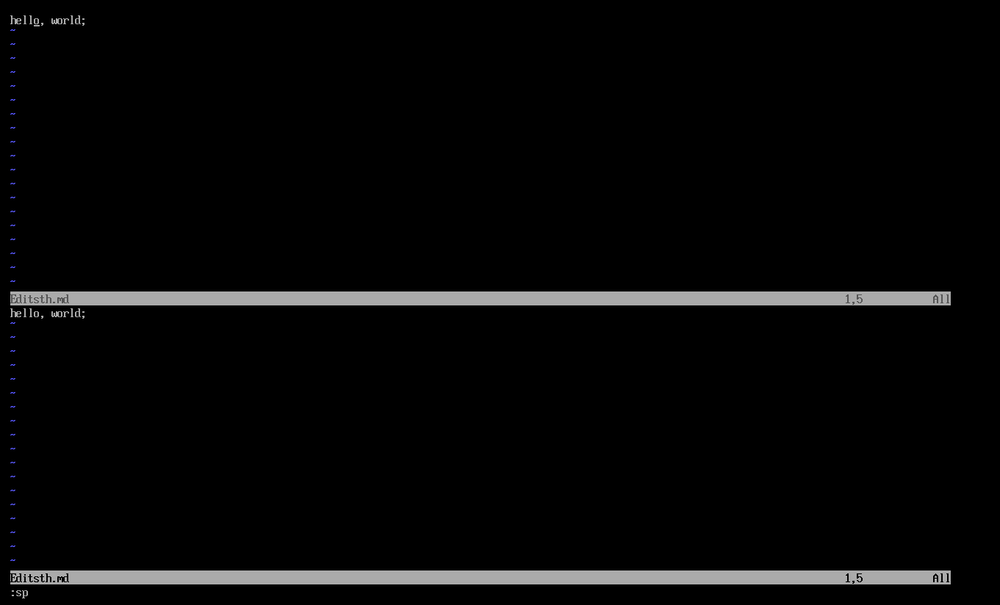
:tabnew
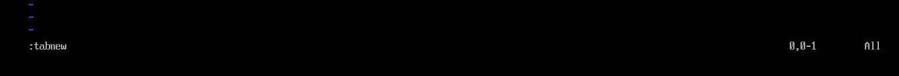
可以让每个编辑都是独立的而不是同步的。
下面讲讲移动，移动的话借用一张图就可以
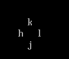
如你所见，k向上，h向左 ，l向右， j向下。w键是跳到下一个单词。
0则是跳到行首，$跳到行尾
常见命令一览
插入命令：
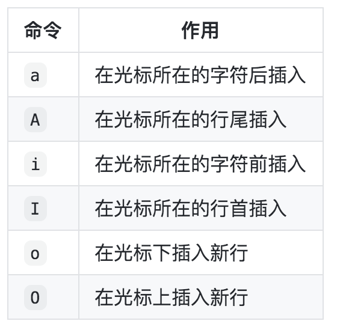
输入模式：主要用于文本编辑，和记事本类似，输入数据就好
末行模式（编辑模式）：
- :w 保存不退出
- :w 新文件名 把文件另存为新文件
- :q 不保存退出
- :wq 保存退出
- :! 强制
- :q! 强制不保存退出，用于修改文件之后，不保存数据退出
- :wq! 强制保存退出，当文件的所有者或 root 用户，对文件没有写权限的时候，强制写入数据使用
3、命令模式操作
1、移动光标
1）、上下左右移动光标
上、下、左、右方向键 移动光标
h（左） j（下） k（上） l（右） 移动光标
2）、光标移动到文件头或文件尾
gg 移动到文件头
G 移动到文件尾（shift + g）
3）、光标移动到行首或行尾
^ 移动到行首
$ 移动到行尾
4）、移动到指定行
:n 移动到第几行（这里的 n 是数字）
2、删除或剪切
1）、删除字母
x 删除单个字母
nx 删除 n 个字母（n 是数字，如果打算从光标位置连续删除 10 个字母，可以使用 10x 即可）
2）、删除整行或剪切
dd 删除单行
ndd 删除多行
:n1,n2d 删除指定范围的行
删除行或多行，是比较常用的删除方法。这里的 dd 快捷键既是删除也是剪切。删除内容放入了剪切板，如果不粘贴就是删除，粘贴就是剪切。粘贴方法：
p 粘贴到光标下面一行
P 粘贴到光标上面一行
3）、从光标所在行删除到文件尾
dG 从光标所在行删除到文件尾（d 是删除行，G 是文件尾，连起来就是从光标行删除到文件尾）
3、复制
yy 复制单行
nyy 复制多行
复制之后的粘贴依然可以使用 p 键或 P 键
4、撤销
u 撤销
ctrl + r 反撤销
u 键能一直撤销到文件打开时的状态，ctrl + r 能一直反撤销到最后一次操作状态
5、替换
r 替换光标所在处的字符
R 从光标所在处开始替换字符，按 esc 键结束
4、末行模式操作
1、一些设置操作
设置参数含义:set nu
:set nonu`显示与取消行号`:syntax on
:syntax off`是否依据语法显示相关颜色帮助。默认会显示相关颜色来帮助排错`:set hlsearch
:set nohlsearch`设置是否将查找的字符串高亮显示。默认是高亮显示`:set showmode
:set noshowmode`设置是否在左下角显示如“-INSERT-” 之类的状态栏。默认是开启的`:set list:set nolist设置是否显示隐藏字符。（tab 键用 “^I” 表示，回车符用 “$” 键表示）
注：
- 上面设置的参数都只是临时生效，一旦关闭文件再打开，又需要重新输入。如果想要永久生效，需要手动建立 vim 的配置文件 ==“~/vimrc”== ，把你需要的参数写入配置文件就永久生效了。
- Windows 下回车符在 Linux 中是用
“^M$”显示的，而不是“$”。这样会导致 Windows 下编辑的程序脚本（如 shell 脚本），无法在 Linux 中执行。这时可以通过命令 ==「dos2unix」==，把 windows 格式转换为 Linux 格式。同样可以使用 ==「unix2dos」== ，把 Linux 格式转换为 Windows 格式。这两个命令默认没有安装，需要手动安装才能使用。
2、查找
/查找内容 从光标所在行向下查找
?查找内容 从光标所在行向上查找
n 下一个
N 上一个
3、替换
:1,10s/old/new/g 替换 1 到 10 行所有 old 为 new（s 表示替换）
:%s/old/new/g 替换整个文件的 old 为 new（% 是一个变量，在这里代表整篇文档）
在 shell 中 “#” 开头是注释，假如说我想注释文件前 10 行，如果手工一个一个注释会很麻烦，可以使用替换来解决。
:1,10s/^/#/g 注释 1 到 10 行
:1,10s/^#//g 取消 1 到 10 行的注释
5、vim 使用技巧
1、导入其他文件的内容
:r 文件名 把文件内容导入到光标位置
:r /root/aa.txt #末行模式下，输入这个会把 /root/aa.txt 文件的内容加到你光标所在处2、在 vim 中执行系统命令
:!命令 在 vim 中执行系统命令
这里只是在 vim 中执行系统命令，但并不把系统命令的结果写入到文件中。主要用于在文件编辑中，查看系统信息，如时间。
3、导入命令结果
:r !命令 在 vim 中执行系统命令，并把命令结果导入光标所在行
4、多文件打开
在 vim 中可以同时打开两个文件
vim -o aa.txt abcd 上下分屏打开两个文件(小 o)
vim -O aa.txt abcd 左右分屏打开两个文件(大 O)如果是上下打开两个文件，可以通过先按 「ctrl + w」再按上下箭头的方式在两个文件之间切换。
如果是左右打开两个文件，可以通过先按 「ctrl + w」再按左右箭头的方式在两个文件之间切换。
data wraggling
一个简单的筛选办法就是使用grep，他会筛选特定的信息出来。1. 正则常见规则
正则表达式
正则表达式在命令行环境和数据筛选中十分的常见：
1.1 字符匹配
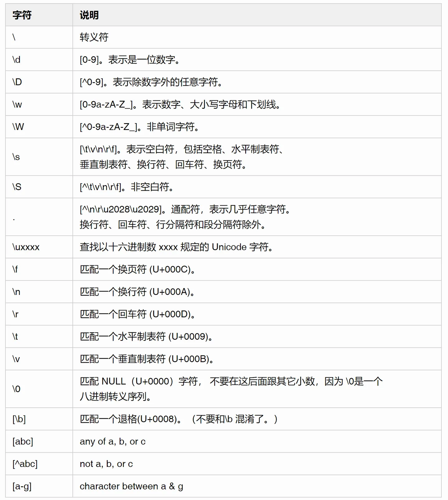
1.2 位置匹配
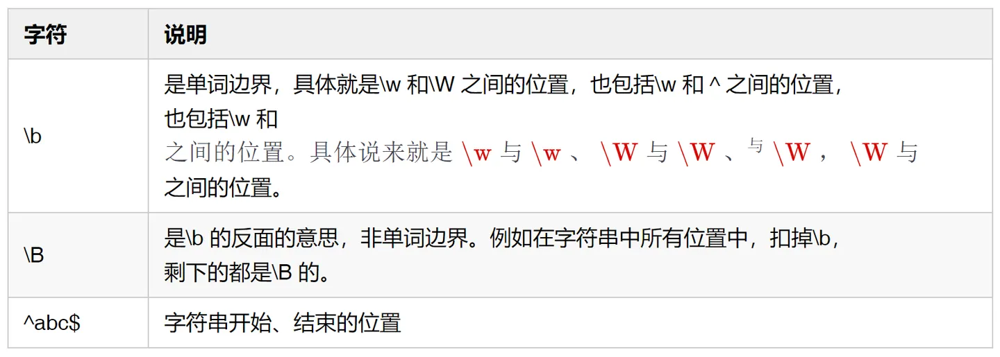
1.3 组
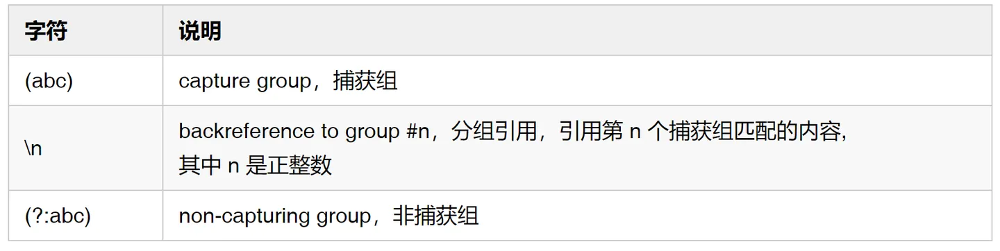
1.4 先行断言
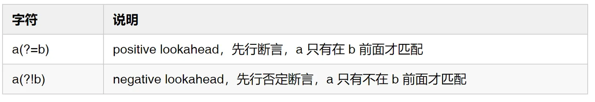
1.5 后行断言
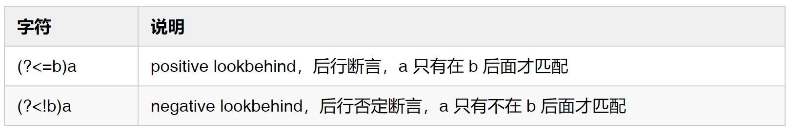
1.6 量词和分支

以下都是惰性匹配
{m,n}?
{m,}?
??
+?
*?
1.7 分支
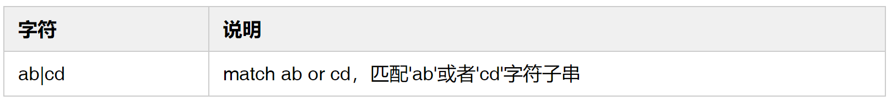
1.8 修饰符
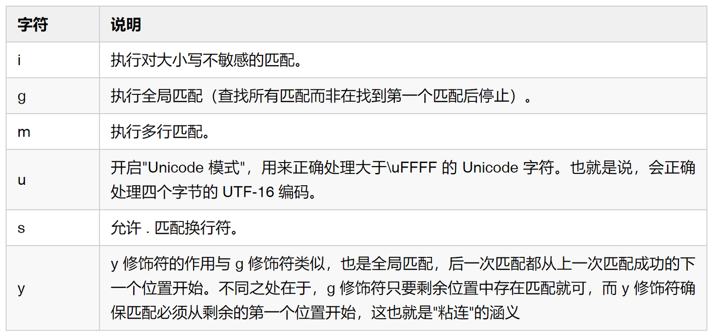
2. 运算符优先级

Command Line Environment
我们下面就要熟悉命令行的环境，首先第一件事情就是要强掉停止指令就是摁下
Ctrl + C 举个例子
sleep 114514 这个指令将会使得计算机休眠114514秒，想要停止休眠就要摁下Ctrl + C键
可以看到输入其他键只是向bash传递了字符，只有摁下Ctrl + C 键才会使得计算机脱离休眠状态。
这是因为我们向计算机发送了SIGINT信号。
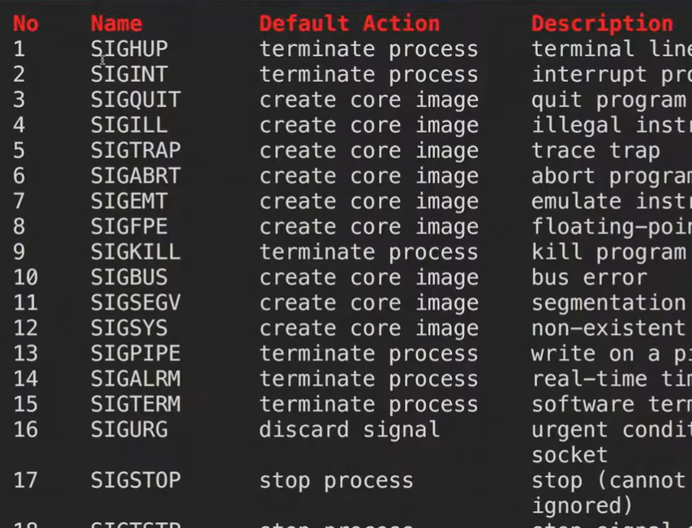
这些就是常见的SIG，这里不做详细的介绍。
常见的终止进程有挂起(HUG)，终止(KILL)，我们可以设置一些进程是忽略挂起的，但是没有办法设置进程无法被KILLED!
设置别名：我们可以给一些常见的指令起外号：alias
alias newName="Command"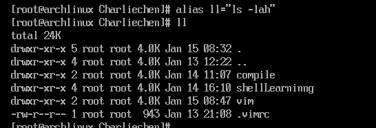
这就可以起到简化指令的作用。
查询别名只需要
alias newName 他就会返回他映射的内容。
我们常见的配置文件是:.bashrc，我们默认加载的是~/.bashrc文件，启动这个bash只需要
bash 我们接下来讲解的是git。git是什么这里就不细讲了，不是我们的重点，只需要直到他是版本控制系统就可以，用在多人的协作项目开发即可
初始化
我们cd到目标的文件夹：
git init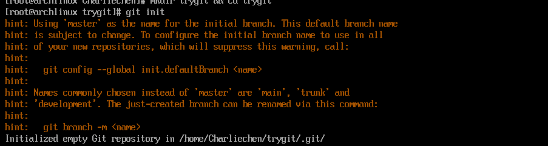
这里我们看到这样就是创建了一个git本地仓库了
我们ls -a看一下：
是的，多出来了.git文件夹，实质上就是里面由多个存储的记录
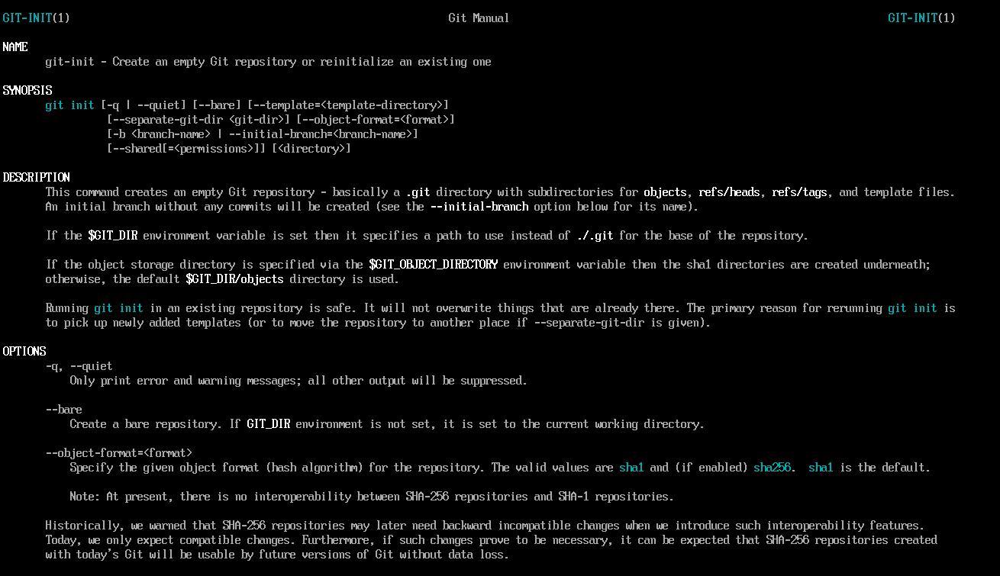
当我们对一些指令疑惑的时候，可以使用
git help command 指令查询对应的指令到底是什么意思。
查询现在的git状态
git status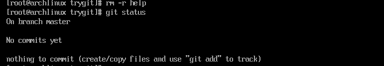
在之后的开发中，如果我们想要直到当前发生了什么事情，就可以使用这条指令。
开始提交
我们下面创建一个文件。
echo "A Commit" > hello.txt 注意到Git是有分期的说法的。也就是说它的提交是Step by Step的，我们必须进行一系列的步骤进行提交而不是一条指令单纯的结束这件事情。
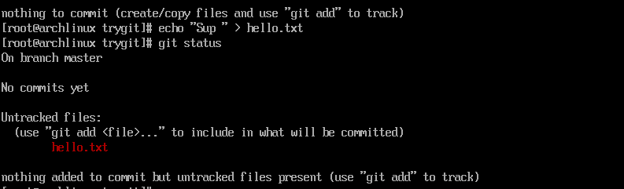
我们这个时候再去查看git status，就会发现上图的git已经捕捉到了文件的变动
现在我们就将之加入到操作队列去
git add File ...
# or git add . to commit all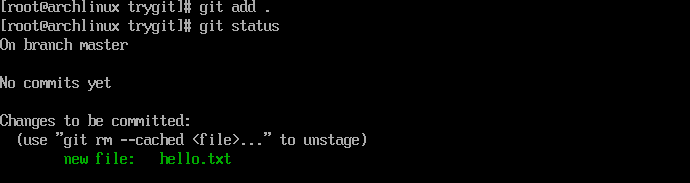
我们在进行多轮的git add之后，就可以提交了
git commit -m "Messages"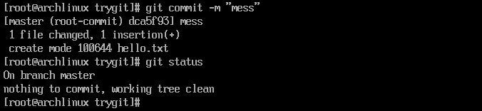
这样我们就提交上去了。我们还可以使用
git log 指令来查看
git log --all --graph ---decorate 这个可以美化我们的输出
我们对文件做出修改，我们再次看看状态：
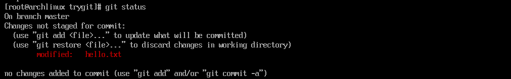
会发现他检查出我们有做一个修改。
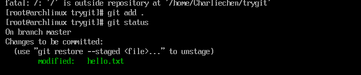
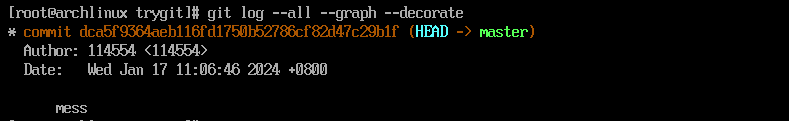
切换分支
git checkout 将会切换我们的工作分支。
增加分支
# 增加分支
git branch name
# 查看分支
git branch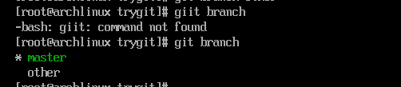
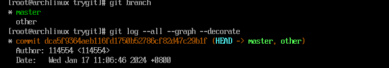
现在我们的输入被解析为相同的提交向全局所有的分支
合并分支
git merge branchName 可能会发生冲突，这个时候我们得知我们没法简单的合并。为例解决冲突
git mergetool 他会提示你设置合并冲突。我们可以手动作出修改
git merge name --continue 就可以继续了
我们查看log也会指出我们的路径。
Debuging && Profiling
下面我们开始讨论调试与性能分析
日志分析与printf大法
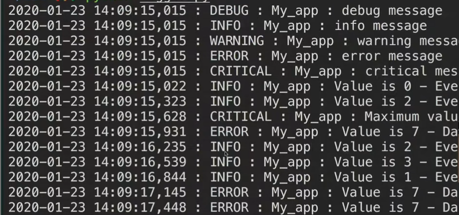
大概就像这样一样。我们的日志除了具有打印的功能，还得具有筛选的功能。也就是按照一定的级别进行输出。
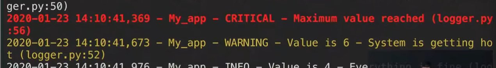
我们如何告知终端显示不同的颜色的字符
| Code | Color | Example | Preview |
|---|---|---|---|
| 39 | 默认前景色 | echo -e “Default \ e [39mDefault” |  |
| 30 | 黑色 | echo -e “Default \ e [30mBlack” |  |
| 31 | 红色 | echo -e “Default \ e [31mRed” | |
| 32 | 绿色 | echo -e “Default \ e [32mGreen” |  |
| 33 | 黄色 | echo -e “Default \ e [33mYellow” |  |
| 34 | 蓝色 | echo -e “Default \ e [34mBlue” |  |
| 35 | 品红 | echo -e “Default \ e [35mMagenta” |  |
| 36 | 青色 | echo -e “Default \ e [36mCyan” |  |
| 37 | 浅灰 | echo -e “Default \ e [37mLight grey” | |
| 90 | 深灰色 | echo -e “Default \ e [90mDark grey” |  |
| 91 | 红灯 | echo -e “默认\ e [91mLight red” |  |
| 92 | 浅绿色 | echo -e “Default \ e [92mLight green” | |
| 93 | 淡黄色 | echo -e “Default \ e [93mLight yellow” |  |
| 94 | 浅蓝 | echo -e “Default \ e [94mLight blue” |  |
| 95 | 浅洋红色 | echo -e “Default \ e [95mLight magenta” | |
| 96 | 浅青色 | echo -e “Default \ e [96mLight cyan” | |
| 97 | 白色 | echo -e “Default \ e [97mWhite” |  |
查看系统日志
logger "Expressions" 向系统日志写入字符串
log show 查看系统日志
模板元编程
我们将会考虑构建系统，也就是如何处理目标以及目标和依赖的问题
make
make就是一个负责构建系统的工具。但是这里不打算详细的讲述make怎么写。事实上，CMake等现代工具已经可以帮助产生更好的MakeFile工具了
版本号
软件工程领域内：A.B.C是一个标准的版本号，A称为主版本号码，B是次版本号码，C是修改版本号
安全和密码学
我们如何衡量密码的安全性呢？答案是衡量的密码的随机性。假设一个密码是从四个小写的单词拼接组成，每个单词都是从一个含有10万单词的字典中随机选择，且每个单词选中的概率相同。 一个符合这样构造的例子是 correcthorsebatterystaple 。这个密码有多少比特的熵？ 假设另一个密码是用八个随机的大小写字母或数字组成。一个符合这样构造的例子是 rg8Ql34g 。这个密码又有多少比特的熵？
Entropy = log_2(100000^4) = 66 #correcthorsebatterystaple
Entropy = log_2((26+26+10)^8) = 48 #rg8Ql34g也可以使用下面两个网址进行计算
哪一个密码更强？ 假设一个攻击者每秒可以尝试1万个密码，这个攻击者需要多久可以分别破解上述两个密码？
第一个更强。
因为每个密码的概率是相同，所以平均而言，需要的破解时间约为尝试所有可能密码所花时间的一半（概率论期望值的简单应用，记所有可能密码个数为x,每年尝试的密码数为y,破解所需的平均时间为：
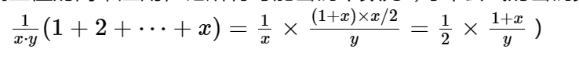
对于第一个密码：100,0004/104/(365×24×3600)/2=1.085亿年
对于第二个密码：628/104/(365×24×3600)/2=346年
2.密码散列函数
下载Debain的ISO的时候，使用sha256sum命令对比下载映像的哈希值和官方Debian站公布的哈希值。如果你下载了上面的映像，
curl -O -L -C - http://debian.xfree.com.ar/debian-cd/current/amd64/iso-cd/debian-mac-10.9.0-amd64-netinst.iso
curl -O https://cdimage.debian.org/debian-cd/current/amd64/iso-cd/SHA256SUMS 注意这里 SHA256SUMS 包含的版本号，下载的 iso 文件也要是对应的版本号。原文中是 10.2.0版本，这里我们下载的是 10.9.0。当
接下来进行哈希比对：
cat SHA256SUMS | grep debian-10.9.0-amd64-netinst.iso
8660593d10de0ce7577c9de4dab886ff540bc9843659c8879d8eea0ab224c109 debian-10.9.0-amd64-netinst.iso
shasum -a 256 debian-10.9.0-amd64-netinst.iso
8660593d10de0ce7577c9de4dab886ff540bc9843659c8879d8eea0ab224c109 debian-10.9.0-amd64-netinst.iso 可以看出来两个哈希是一样的。 也可以用diff直接比较：
diff <(cat SHA256SUMS |grep debian-10.9.0-amd64-netinst.iso) <(shasum -a 256 debian-10.9.0-amd64-netinst.iso)3. 对称加密
使用 OpenSSL的AES模式加密一个文件: openssl aes-256-cbc -salt -in {源文件名} -out {加密文件名}。 使用cat或者hexdump对比源文件和加密的文件，再用 openssl aes-256-cbc -d -in {加密文件名} -out {解密文件名}命令解密刚刚加密的文件。最后使用cmp命令确认源文件和解密后的文件内容相同。
echo "hello world" > afile #创建一个文件
openssl aes-256-cbc -salt -in afile -out secfile #加密文件
enter aes-256-cbc encryption password:***
Verifying - enter aes-256-cbc encryption password:***使用 hexdump比较两个文件
diff <(hexdump afile) <(hexdump secfile)
1,2c1,3
< 0000000 68 65 6c 6c 6f 20 77 6f 72 6c 64 0a
< 000000c
---
> 0000000 53 61 6c 74 65 64 5f 5f cb 18 f1 7c 4f 09 b4 21
> 0000010 d2 f1 56 77 80 01 b1 2f ac 2d 32 35 52 23 2e c6
> 0000020使用cat比较两个文件
cat afile
# hello world
cat secfile
# Salted__|O !Vw/-25R#.%对文件进行解密
openssl aes-256-cbc -d -in secfile -out notsafefile
cmp afile notsafefile
$?
# 返回0,表示这两个文件内容相同4.非对称加密
在你自己的电脑上使用更安全的ED25519算法生成一组SSH 密钥对。为了确保私钥不使用时的安全，一定使用密码加密你的私钥。
ssh-keygen -t ed25519配置GPG
Linux 系统可以直接按照上面的教程操作，MacOS 上的操作过程如下
$ brew install gpg $ gpg --gen-key给Anish发送一封加密的电子邮件
导入Anish发布的公钥，并完成验证
~ $ curl https://keybase.io/anish/pgp_keys.asc | gpg --import ~ $ gpg --list-keys # ~/.gnupg/pubring.kbx中除了刚才创建的自己的公钥，还存入了Anish的公钥 ~ $ gpg --edit-key "Anish Athalye" # 进入gpg控制台 gpg> fpr pub rsa4096/C3F6E4F5086B3B32 2014-10-30 Anish Athalye <me@anishathalye.com> 主密钥指纹： 72EE 4824 FA6E FF1F E750 A015 C3F6 E4F5 086B 3B32 # 将这个密钥指纹与Anish发布在网站上的做匹配，一致接下来，使用Anish的公钥加密信息
~ $ touch message.txt ~ $ echo 'hello' > message.txt ~ $ gpg --encrypt --sign --armor -r me@anishathalye.com message.txt # 在本目录下会生成一个message.txt.asc的加密文件 # 这个文件，只有拥有私钥的Anish能解密 # 如果你也想查看这个加密文件，需要使用： ~ $ gpg --encrypt --sign --armor -r me@anishathalye.com -r usrname@example.com message.txt # 添加第二个 -r 接收人为你自己，你就能解密这个文件 ~ $ gpg message.txt.asc 接下来，你就可以尝试用邮件或其他方式，将这个使用Anish的公钥加密的文件发送给他（这里只是做说明，不推荐发送无意义的信息！）
使用
git commit -S命令签名一个Git提交，并使用
git show --show-signature命令验证这个提交的签名。或者，使用git tag -s命令签名一个Git标签，并使用
git tag -v命令验证标签的签名。
git commit -S -m "sign a commit"如果遇到
echo "test" | gpg --clearsign gpg: [stdin]: clear-sign failed: Inappropriate ioctl for device则执行
export GPG_TTY=$(tty)此外要注意
~/.gitconfig里面的 name，email 要和生成秘钥时使用的一样，签名算法也是一样的：gpg -K --keyid-format SHORT /Users/lingfeng/.gnupg/pubring.kbx ---------------------------------- sec rsa2048/56EF5DE3 2021-05-15 [SC] [有效至：2023-05-15] 35A0BAB790EBBFE193422975097FC49956EF5DE3 uid [ 绝对 ] hanxiaomax-mac <hanxiaomax@qq.com> ssb rsa2048/55FB9195 2021-05-15 [E] [有效至：2023-05-15]对应的
.gitconfig为[user] name = hanxiaomax-mac email = hanxiaomax@qq.com signingKey = 55FB9195所有问题都解决后，正常签名
git commit -S -m "sign a commit" [main fc8e916] sign a commit 3 files changed, 3 insertions(+) create mode 100644 security/afile create mode 100644 security/notsafefile create mode 100644 security/secfile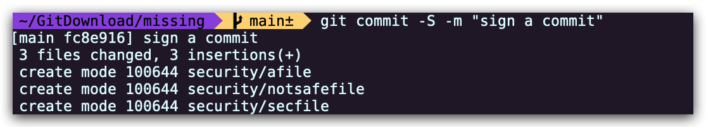
创建一个带签名的标签，并验证
~/signgit (main) $ git tag -s "v0.0.0" -m "Create a tag" ~/signgit (main) $ git tag -v v0.0.0 object 03fa307f9ced5d9717473a429d76122e46c7a70f type commit tag v0.0.0 tagger usrname <usrname@example.com> 1683883065 +0800 Create a tag gpg: Signature made Fri May 12 17:18:13 2023 CST gpg: using RSA key 07C700F1B0F8A6BFDA61571CA29FF423FCBD1279 gpg: issuer "usrname@example.com" gpg: Good signature from "usrname <usrname@example.com>" [ultimate]
大杂烩
修改键位映射
作为一名程序员，键盘是你的主要输入工具。它像计算机里的其他部件一样是可配置的，而且值得你在这上面花时间。
一个很常见的配置是修改键位映射。通常这个功能由在计算机上运行的软件实现。当某一个按键被按下，软件截获键盘发出的按键事件（keypress event）并使用另外一个事件取代。比如：
- 将 Caps Lock 映射为 Ctrl 或者 Escape：Caps Lock 使用了键盘上一个非常方便的位置而它的功能却很少被用到，所以我们（讲师）非常推荐这个修改；
- 将 PrtSc 映射为播放/暂停：大部分操作系统支持播放/暂停键；
- 交换 Ctrl 和 Meta 键（Windows 的徽标键或者 Mac 的 Command 键）。
你也可以将键位映射为任意常用的指令。软件监听到特定的按键组合后会运行设定的脚本。
- 打开一个新的终端或者浏览器窗口；
- 输出特定的字符串，比如：一个超长邮件地址或者 MIT ID；
- 使计算机或者显示器进入睡眠模式。
甚至更复杂的修改也可以通过软件实现：
- 映射按键顺序，比如：按 Shift 键五下切换大小写锁定；
- 区别映射单点和长按，比如：单点 Caps Lock 映射为 Escape，而长按 Caps Lock 映射为 Ctrl；
- 对不同的键盘或软件保存专用的映射配置。
下面是一些修改键位映射的软件：
- macOS - karabiner-elements, skhd 或者 BetterTouchTool
- Linux - xmodmap 或者 Autokey
- Windows - 控制面板，AutoHotkey 或者 SharpKeys
- QMK - 如果你的键盘支持定制固件，QMK 可以直接在键盘的硬件上修改键位映射。保留在键盘里的映射免除了在别的机器上的重复配置。
守护进程
即便守护进程（daemon）这个词看上去有些陌生，你应该已经大约明白它的概念。大部分计算机都有一系列在后台保持运行，不需要用户手动运行或者交互的进程。这些进程就是守护进程。以守护进程运行的程序名一般以 d 结尾，比如 SSH 服务端 sshd，用来监听传入的 SSH 连接请求并对用户进行鉴权。
Linux 中的 systemd（the system daemon）是最常用的配置和运行守护进程的方法。运行 systemctl status 命令可以看到正在运行的所有守护进程。这里面有很多可能你没有见过，但是掌管了系统的核心部分的进程：管理网络、DNS解析、显示系统的图形界面等等。用户使用 systemctl 命令和 systemd 交互来enable（启用）、disable（禁用）、start（启动）、stop（停止）、restart（重启）、或者status（检查）配置好的守护进程及系统服务。
systemd 提供了一个很方便的界面用于配置和启用新的守护进程或系统服务。下面的配置文件使用了守护进程来运行一个简单的 Python 程序。文件的内容非常直接所以我们不对它详细阐述。systemd 配置文件的详细指南可参见 freedesktop.org。
# /etc/systemd/system/myapp.service
[Unit]
# 配置文件描述
Description=My Custom App
# 在网络服务启动后启动该进程
After=network.target
[Service]
# 运行该进程的用户
User=foo
# 运行该进程的用户组
Group=foo
# 运行该进程的根目录
WorkingDirectory=/home/foo/projects/mydaemon
# 开始该进程的命令
ExecStart=/usr/bin/local/python3.7 app.py
# 在出现错误时重启该进程
Restart=on-failure
[Install]
# 相当于Windows的开机启动。即使GUI没有启动，该进程也会加载并运行
WantedBy=multi-user.target
# 如果该进程仅需要在GUI活动时运行，这里应写作：
# WantedBy=graphical.target
# graphical.target在multi-user.target的基础上运行和GUI相关的服务如果你只是想定期运行一些程序，可以直接使用 cron。它是一个系统内置的，用来执行定期任务的守护进程。
FUSE
现在的软件系统一般由很多模块化的组件构建而成。你使用的操作系统可以通过一系列共同的方式使用不同的文件系统上的相似功能。比如当你使用 touch 命令创建文件的时候，touch 使用系统调用（system call）向内核发出请求。内核再根据文件系统，调用特有的方法来创建文件。这里的问题是，UNIX 文件系统在传统上是以内核模块的形式实现，导致只有内核可以进行文件系统相关的调用。
FUSE（用户空间文件系统）允许运行在用户空间上的程序实现文件系统调用，并将这些调用与内核接口联系起来。在实践中，这意味着用户可以在文件系统调用中实现任意功能。
FUSE 可以用于实现如：一个将所有文件系统操作都使用 SSH 转发到远程主机，由远程主机处理后返回结果到本地计算机的虚拟文件系统。这个文件系统里的文件虽然存储在远程主机，对于本地计算机上的软件而言和存储在本地别无二致。sshfs就是一个实现了这种功能的 FUSE 文件系统。
一些有趣的 FUSE 文件系统包括：
- sshfs：使用 SSH 连接在本地打开远程主机上的文件
- rclone：将 Dropbox、Google Drive、Amazon S3、或者 Google Cloud Storage 一类的云存储服务挂载为本地文件系统
- gocryptfs：覆盖在加密文件上的文件系统。文件以加密形式保存在磁盘里，但该文件系统挂载后用户可以直接从挂载点访问文件的明文
- kbfs：分布式端到端加密文件系统。在这个文件系统里有私密（private），共享（shared），以及公开（public）三种类型的文件夹
- borgbackup：方便用户浏览删除重复数据后的压缩加密备份
备份
任何没有备份的数据都可能在一个瞬间永远消失。复制数据很简单，但是可靠地备份数据很难。下面列举了一些关于备份的基础知识，以及一些常见做法容易掉进的陷阱。
首先，复制存储在同一个磁盘上的数据不是备份，因为这个磁盘是一个单点故障（single point of failure）。这个磁盘一旦出现问题，所有的数据都可能丢失。放在家里的外置磁盘因为火灾、抢劫等原因可能会和源数据一起丢失，所以是一个弱备份。推荐的做法是将数据备份到不同的地点存储。
同步方案也不是备份。即使方便如 Dropbox 或者 Google Drive，当数据在本地被抹除或者损坏，同步方案可能会把这些“更改”同步到云端。同理，像 RAID 这样的磁盘镜像方案也不是备份。它不能防止文件被意外删除、损坏、或者被勒索软件加密。
有效备份方案的几个核心特性是：版本控制，删除重复数据，以及安全性。对备份的数据实施版本控制保证了用户可以从任何记录过的历史版本中恢复数据。在备份中检测并删除重复数据，使其仅备份增量变化可以减少存储开销。在安全性方面，作为用户，你应该考虑别人需要有什么信息或者工具才可以访问或者完全删除你的数据及备份。最后一点，不要盲目信任备份方案。用户应该经常检查备份是否可以用来恢复数据。
备份不限制于备份在本地计算机上的文件。云端应用的重大发展使得我们很多的数据只存储在云端。当我们无法登录这些应用，在云端存储的网络邮件，社交网络上的照片，流媒体音乐播放列表，以及在线文档等等都会随之丢失。用户应该有这些数据的离线备份，而且已经有项目可以帮助下载并存储它们。
如果想要了解更多具体内容，请参考本课程2019年关于备份的课堂笔记。
API（应用程序接口）
关于如何使用计算机有效率地完成 本地 任务，我们这堂课已经介绍了很多方法。这些方法在互联网上其实也适用。大多数线上服务提供的 API（应用程序接口）让你可以通过编程方式来访问这些服务的数据。比如，美国国家气象局就提供了一个可以从 shell 中获取天气预报的 API。
这些 API 大多具有类似的格式。它们的结构化 URL 通常使用 api.service.com 作为根路径，用户可以访问不同的子路径来访问需要调用的操作，以及添加查询参数使 API 返回符合查询参数条件的结果。
以美国天气数据为例，为了获得某个地点的天气数据，你可以发送一个 GET 请求（比如使用curl）到https://api.weather.gov/points/42.3604,-71.094。返回中会包括一系列用于获取特定信息（比如小时预报、气象观察站信息等）的 URL。通常这些返回都是JSON格式，你可以使用jq等工具来选取需要的部分。
有些需要认证的 API 通常要求用户在请求中加入某种私密令牌（secret token）来完成认证。请阅读你想访问的 API 所提供的文档来确定它请求的认证方式，但是其实大多数 API 都会使用 OAuth。OAuth 通过向用户提供一系列仅可用于该 API 特定功能的私密令牌进行校验。因为使用了有效 OAuth 令牌的请求在 API 看来就是用户本人发出的请求，所以请一定保管好这些私密令牌。否则其他人就可以冒用你的身份进行任何你可以在这个 API 上进行的操作。
IFTTT 这个网站可以将很多 API 整合在一起，让某 API 发生的特定事件触发在其他 API 上执行的任务。IFTTT 的全称If This Then That 足以说明它的用法，比如在检测到用户的新推文后，自动发布在其他平台。但是你可以对它支持的 API 进行任意整合，所以试着来设置一下任何你需要的功能吧！
常见命令行标志参数及模式
命令行工具的用法千差万别，阅读 man 页面可以帮助你理解每种工具的用法。即便如此，下面我们将介绍一下命令行工具一些常见的共同功能。
大部分工具支持
--help或者类似的标志参数（flag）来显示它们的简略用法。会造成不可撤回操作的工具一般会提供“空运行”（dry run）标志参数，这样用户可以确认工具真实运行时会进行的操作。这些工具通常也会有“交互式”（interactive）标志参数，在执行每个不可撤回的操作前提示用户确认。
--version或者-V标志参数可以让工具显示它的版本信息（对于提交软件问题报告非常重要）。基本所有的工具支持使用
--verbose或者-v标志参数来输出详细的运行信息。多次使用这个标志参数，比如-vvv，可以让工具输出更详细的信息（经常用于调试）。同样，很多工具支持--quiet标志参数来抑制除错误提示之外的其他输出。大多数工具中，使用
-代替输入或者输出文件名意味着工具将从标准输入（standard input）获取所需内容，或者向标准输出（standard output）输出结果。会造成破坏性结果的工具一般默认进行非递归的操作，但是支持使用“递归”（recursive）标志函数（通常是
-r）。有的时候你可能需要向工具传入一个
看上去
像标志参数的普通参数，比如：
- 使用
rm删除一个叫-r的文件； 在通过一个程序运行另一个程序的时候（
ssh machine foo），向内层的程序（foo）传递一个标志参数。这时候你可以使用特殊参数
--让某个程序 停止处理--后面出现的标志参数以及选项（以-开头的内容）：rm -- -r会让rm将-r当作文件名；ssh machine --for-ssh -- foo --for-foo的--会让ssh知道--for-foo不是ssh的标志参数。
窗口管理器
大部分人适应了 Windows、macOS、以及 Ubuntu 默认的“拖拽”式窗口管理器。这些窗口管理器的窗口一般就堆在屏幕上，你可以拖拽改变窗口的位置、缩放窗口、以及让窗口堆叠在一起。这种堆叠式（floating/stacking）管理器只是窗口管理器中的一种。特别在 Linux 中，有很多种其他的管理器。
平铺式（tiling）管理器就是一个常见的替代。顾名思义，平铺式管理器会把不同的窗口像贴瓷砖一样平铺在一起而不和其他窗口重叠。这和 tmux 管理终端窗口的方式类似。平铺式管理器按照写好的布局显示打开的窗口。如果只打开一个窗口，它会填满整个屏幕。新开一个窗口的时候，原来的窗口会缩小到比如三分之二或者三分之一的大小来腾出空间。打开更多的窗口会让已有的窗口进一步调整。
就像 tmux 那样，平铺式管理器可以让你在完全不使用鼠标的情况下使用键盘切换、缩放、以及移动窗口。它们值得一试！
VPN
VPN 现在非常火，但我们不清楚这是不是因为一些好的理由。你应该了解 VPN 能提供的功能和它的限制。使用了 VPN 的你对于互联网而言，最好的情况下也就是换了一个网络供应商（ISP）。所有你发出的流量看上去来源于 VPN 供应商的网络而不是你的“真实”地址，而你实际接入的网络只能看到加密的流量。
虽然这听上去非常诱人，但是你应该知道使用 VPN 只是把原本对网络供应商的信任放在了 VPN 供应商那里——网络供应商 能看到的，VPN 供应商 也都能看到。如果相比网络供应商你更信任 VPN 供应商，那当然很好。反之，则连接VPN的价值不明确。机场的不加密公共热点确实不可以信任，但是在家庭网络环境里，这个差异就没有那么明显。
你也应该了解现在大部分包含用户敏感信息的流量已经被 HTTPS 或者 TLS 加密。这种情况下你所处的网络环境是否“安全”不太重要：供应商只能看到你和哪些服务器在交谈，却不能看到你们交谈的内容。
这一切的大前提都是“最好的情况”。曾经发生过 VPN 提供商错误使用弱加密或者直接禁用加密的先例。另外，有些恶意的或者带有投机心态的供应商会记录和你有关的所有流量，并很可能会将这些信息卖给第三方。找错一家 VPN 经常比一开始就不用 VPN 更危险。
MIT 向有访问校内资源需求的成员开放自己运营的 VPN。如果你也想自己配置一个 VPN，可以了解一下 WireGuard 以及 Algo。
Markdown
你在职业生涯中大概率会编写各种各样的文档。在很多情况下这些文档需要使用标记来增加可读性，比如：插入粗体或者斜体内容，增加页眉、超链接、以及代码片段。
在不使用 Word 或者 LaTeX 等复杂工具的情况下，你可以考虑使用 Markdown 这个轻量化的标记语言（markup language）。你可能已经见过 Markdown 或者它的一个变种。很多环境都支持并使用 Markdown 的一些子功能。
Markdown 致力于将人们编写纯文本时的一些习惯标准化。比如：
用
*包围的文字表示强调（斜体），或者用**表示特别强调（粗体）；以
#开头的行是标题，#的数量表示标题的级别，比如：##二级标题；以
-开头代表一个无序列表的元素。一个数字加.（比如1.）代表一个有序列表元素；反引号
``（backtick）包围的文字会以代码字体`显示。如果要显示一段代码，可以在每一行前加四个空格缩进，或者使用三个反引号包围整个代码片段：就像这样如果要添加超链接，将 需要显示 的文字用方括号包围，并在后面紧接着用圆括号包围链接：
[显示文字](指向的链接)。
Markdown 不仅容易上手，而且应用非常广泛。实际上本课程的课堂笔记和其他资料都是使用 Markdown 编写的。点击这个链接可以看到本页面的原始 Markdown 内容。
开机引导以及 Live USB
在你的计算机启动时，BIOS 或者 UEFI 会在加载操作系统之前对硬件系统进行初始化，这被称为引导（booting）。你可以通过按下计算机提示的键位组合来配置引导，比如 Press F9 to configure BIOS. Press F12 to enter boot menu。在 BIOS 菜单中你可以对硬件相关的设置进行更改，也可以在引导菜单中选择从硬盘以外的其他设备加载操作系统——比如 Live USB。
Live USB 是包含了完整操作系统的闪存盘。Live USB 的用途非常广泛，包括：
- 作为安装操作系统的启动盘；
- 在不将操作系统安装到硬盘的情况下，直接运行 Live USB 上的操作系统；
- 对硬盘上的相同操作系统进行修复；
- 恢复硬盘上的数据。
Live USB 通过在闪存盘上 写入 操作系统的镜像制作，而写入不是单纯的往闪存盘上复制 .iso 文件。你可以使用 UNetbootin 、Rufus 等 Live USB 写入工具制作。
Docker, Vagrant, VMs, Cloud, OpenStack
虚拟机（Virtual Machine）以及容器化（containerization）等工具可以帮助你模拟一个包括操作系统的完整计算机系统。虚拟机可以用于创建独立的测试或者开发环境，以及用作安全测试的沙盒。
Vagrant 是一个构建和配置虚拟开发环境的工具。它支持用户在配置文件中写入比如操作系统、系统服务、需要安装的软件包等描述，然后使用 vagrant up 命令在各种环境（VirtualBox，KVM，Hyper-V等）中启动一个虚拟机。Docker 是一个使用容器化概念的类似工具。
租用云端虚拟机可以享受以下资源的即时访问：
- 便宜、常开、且有公共IP地址的虚拟机用来托管网站等服务
- 有大量 CPU、磁盘、内存、以及 GPU 资源的虚拟机
- 超出用户可以使用的物理主机数量的虚拟机
- 相比物理主机的固定开支，虚拟机的开支一般按运行的时间计算。所以如果用户只需要在短时间内使用大量算力，租用1000台虚拟机运行几分钟明显更加划算。
受欢迎的 VPS 服务商有 Amazon AWS，Google Cloud、 Microsoft Azure以及DigitalOcean。
MIT CSAIL 的成员可以使用 CSAIL OpenStack instance 申请免费的虚拟机用于研究。
交互式记事本编程
交互式记事本可以帮助开发者进行与运行结果交互等探索性的编程。现在最受欢迎的交互式记事本环境大概是 Jupyter。它的名字来源于所支持的三种核心语言：Julia、Python、R。Wolfram Mathematica 是另外一个常用于科学计算的优秀环境。
GitHub
GitHub 是最受欢迎的开源软件开发平台之一。我们课程中提到的很多工具，从 vim 到 Hammerspoon，都托管在 Github 上。向你每天使用的开源工具作出贡献其实很简单，下面是两种贡献者们经常使用的方法：
- 创建一个议题（issue）。 议题可以用来反映软件运行的问题或者请求新的功能。创建议题并不需要创建者阅读或者编写代码，所以它是一个轻量化的贡献方式。高质量的问题报告对于开发者十分重要。在现有的议题发表评论也可以对项目的开发作出贡献。
- 使用拉取请求（pull request）提交代码更改。由于涉及到阅读和编写代码，提交拉取请求总的来说比创建议题更加深入。拉取请求是请求别人把你自己的代码拉取（且合并）到他们的仓库里。很多开源项目仅允许认证的管理者管理项目代码，所以一般需要复刻（fork）这些项目的上游仓库（upstream repository），在你的 Github 账号下创建一个内容完全相同但是由你控制的复刻仓库。这样你就可以在这个复刻仓库自由创建新的分支并推送修复问题或者实现新功能的代码。完成修改以后再回到开源项目的 Github 页面创建一个拉取请求。